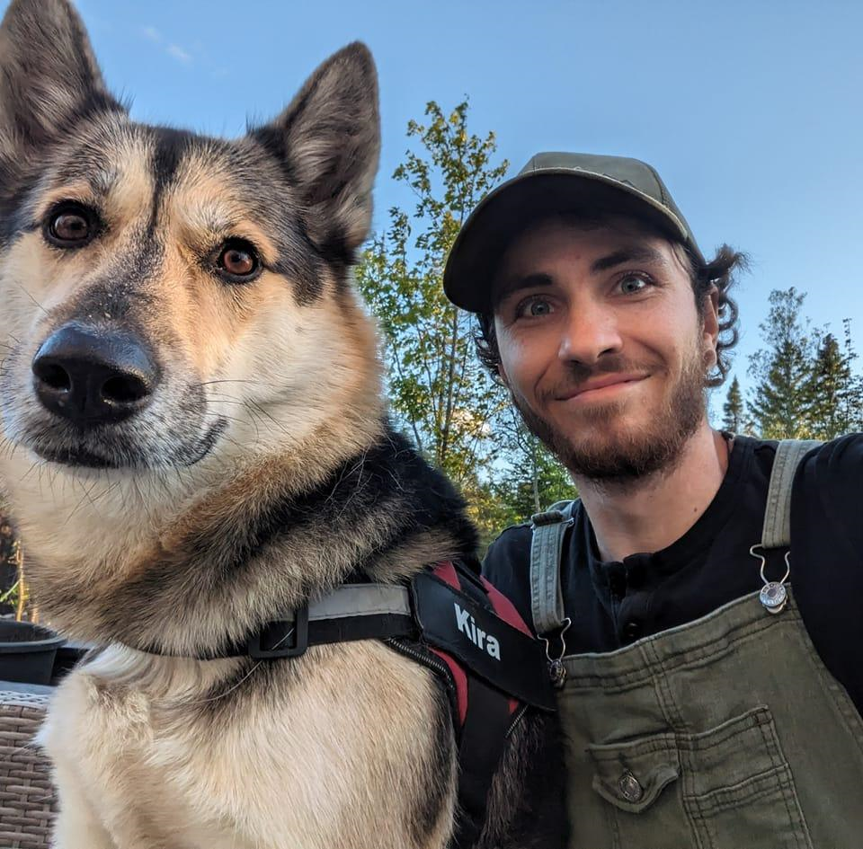

Nicolas Turcotte-Soucy

Professional Profile
I am a video game enthusiast with a strong interest in programming for UI/UX related to creating and optimizing user experience. I have a strong desire to acquire new skills, and I also demonstrate good organizational skills and autonomy in prioritizing deliverables for various projects and clients
Education
Professional Experience
-
Service Contract, VR Application Programming (08/2023 – 09/2023)
- Create an application for the Oculus Go VR headset that allows users to watch 360° videos.
-
Develop a simple and accessible user interface for all users.
-
Ensure regular communication with the client and propose solutions to achieve the project's vision.
- Toitures Marcel Pouliot, Sheet Metal Worker - Roofer (2017 – 2022)
-
Estimate the workload.
-
Calculate the required materials.
-
Develop an action plan based on the task to be completed.
- Éco Café, Barista
-
Serve customers and ensure the quality of beverages according to client requests.
-
Prepare inventories and maintain a clean and sanitized workspace.
-
Handle end-of-day accounting and close the shop.
Personal Interest
- Video Game
- Sport
- Coffee
- Bouldering